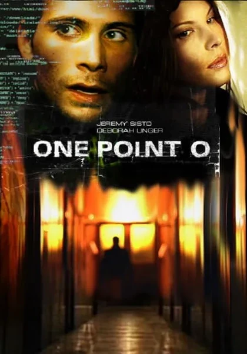

Фильм · 2004 · Детектив, Фантастика
Саймон Джозеф живет в квартире-капсуле, пишет код для клиентов и никогда не выходит из дома без веской причины. Всё начинается с пустых банок из-под джина в холодильнике и загадочных обновлений, устанавливающихся самостоятельно, а заканчивается тем, что Саймон в рамках «добровольных» соглашений оформляет подписку, отдавая данные о собственном теле. Это нуарная научная фантастика о корпоративном контроле над потреблением и подписке как форме кабалы — произведение, созданное задолго до того, как подобная модель стала привычной практикой в бизнесе.
Simon Joseph lives in a capsule apartment, codes for clients and never leaves home without a reason. It starts with empty gin cans in the fridge, continues with mysterious updates that install themselves — and ends with Simon subscribing away data of his own body in 'voluntary' agreements. A noir sci-fi about corporate control of consumption and the subscription as a form of indenture, made long before that became an ordinary business model.
← Вернуться в каталог IT Movies